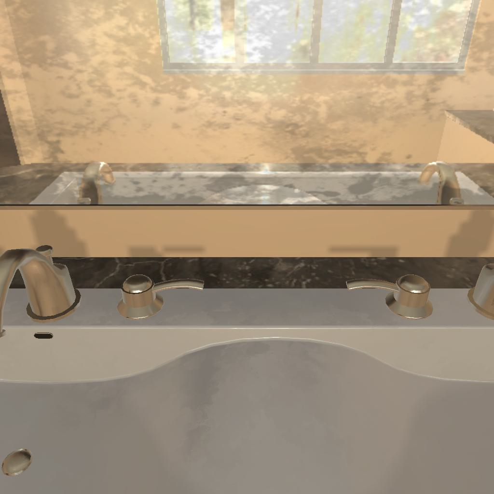

---------------------------------------------------------task: 11---------------------------------------------------------
--------------------------------------------------------------------------------------------------------------------------------------------------------------------
--------------------------------------------------------------------------------------------------------------------------------------------------------------------
Step:--------------------------------------------------------------------------15-------------------------------------------------------------------------------
----------------------------------------
VLM Prompt:
Image1:
Image2:
**Instruction**
1. Analyze the provided images to identify all visible household objects and compare the difference between images (e.h. whether the object is opened or not and taken on hand or not), focusing on those relevant to the task description "clean some soapbar and put it in bathtubbasin."
2. Use the analysis of images and the task hint "The agent must find an object of the desired type, pick it up, go to a sink or a basin, clean the object with a sink or basin, and then find the correct location to place it and put it down there. The agent does not need to use soap bottle or faucet to clean the object, and the agent just needs to do action that is "clean the object with the sink or sink basin"." to answer the question: what is the most reasonable action in the choices for the task description "clean some soapbar and put it in bathtubbasin"?
3. Decide and write the answer using the template: The answer is: (i): , where i is the real number. If there is no desired object in images, search every place based on **Initial Observation** to find the object. And if no one is exactly correct, choose a similar answer.
**Initial Observation**
You are in the middle of a room. Looking quickly around you, you can see bathtub (1), bathtubbasin (1), toilet (1), cabinet (1-2), countertop (1), sink (1), sinkbasin (1), garbagecan (1)
**Answer Choices**
(1): go to bathtub 1
(2): go to bathtubbasin 1
(3): go to toilet 1
(4): go to countertop 1
(5): go to cabinet 2
(6): go to garbagecan 1
(7): open cabinet 1
(8): close cabinet 1
(9): take faucet 1 from cabinet 1
(10): take spraybottle 1 from cabinet 1
(11): take toiletpaper 2 from cabinet 1
(12): take cloth 1 from cabinet 1
(13): take toiletpaper 1 from cabinet 1
(14): take plunger 1 from cabinet 1
(15): take candle 1 from cabinet 1
(16): take scrubbrush 1 from cabinet 1
(17): examine cabinet 1
**Answer**
Let's think step by step by following the instructions.
----------------------------------------
----------------------------------------
Original Response:
First, we need to identify all visible household objects in the images. In Image 1, we can see a sink with a faucet and two handles, a countertop, and a reflection of a bathtub basin in the mirror above the sink. In Image 2, we see a toilet with a cleaning spray bottle on the tank, a countertop with a sink, and a garbage can with some trash next to it.
Comparing the differences between images, there are no significant changes that would indicate an object has been opened, taken, or used. The task description requires us to "clean some soapbar and put it in bathtubbasin." However, there is no soapbar visible in either of the images.
Given the task hint, we need to find a soapbar, clean it, and place it in the bathtub basin. The agent does not need to use soap or a faucet for cleaning the object. Based on the Initial Observation, there is a bathtub basin and a cabinet that we have not yet seen inside. The soapbar could be inside the cabinet.
The most reasonable action from the provided choices, given that we cannot see a soapbar, would be to search the cabinet for the soapbar. Therefore, the correct course of action would be to first open the cabinet to look for the soapbar.
The answer is: (7): open cabinet 1
----------------------------------------
----------------------------------------
>>> Refine Original VLM Response and Get Pure Action: open cabinet 1
----------------------------------------
-----------------------------------------------------------------
Running time: 12.217397212982178 seconds
Total Money: 5.126250000000002
-----------------------------------------------------------------
-----------------------------------------------------------------
Text Observation:Nothing happens.
-----------------------------------------------------------------
UNSUCCEED